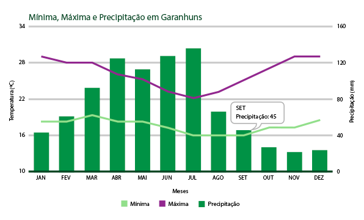
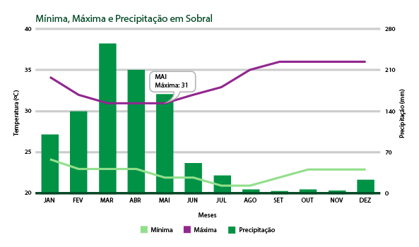
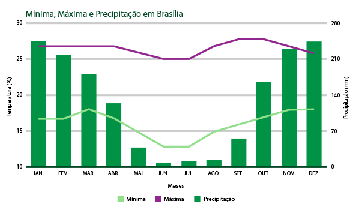
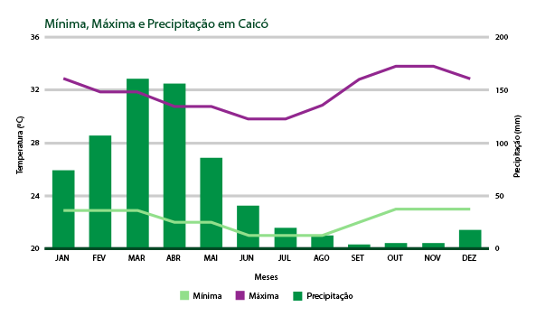
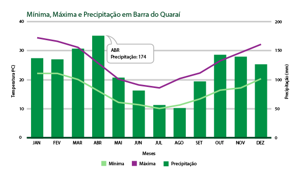

A dinâmica atmosférica do planeta Terra é extremamente complexa, sendo influenciada por uma grande quantidade de fatores, tais como: latitude, altitude, continentalidade e maritimidade, correntes marítimas, entre outros. Esses fatores são determinantes no modo de viver dos habitantes de cada cidade, pois condicionam o tipo de vestimenta, os hábitos de trabalho diurno e noturno, o tipo de alimentação e também o humor das pessoas. Isso ocorre porque essas condicionantes interferem nas condições do tempo, podendo esse variar, dependendo da estação do ano, de muito frio a muito quente, de ensolarado a chuvoso, ou, ainda, ao longo do mesmo dia, tendo oscilações bem significativas com sol, nublado e chuva no mesmo período do dia.
Nesse sentido, uma atividade interessante pode ser uma análise detalhada a respeito desses fatores. Para isso, sugerimos sete climogramas de diferentes locais do Brasil. Neles, é possível notar que há uma variação muito grande de cidade para cidade no que diz respeito à distribuição de chuva ao longo do ano, as mínimas e máximas térmicas que variam conforme a época do ano, a latitude, a altitude etc.
De acordo com os climogramas a seguir, e por meio de uma pesquisa na internet orientada pelo professor, o aluno pode ser instruído a preencher o modelo de quadro a seguir com os dados de cada cidade e construir uma explicação lógica para justificar as diferenças existentes entre os elementos climáticos e a variação do tempo em diferentes áreas do planeta.

Garanhuns (PE)
Fonte: INMET/CFS/Interpolação.

Sobral (CE)
Fonte: INMET/CFS/Interpolação.

Brasília (DF)
Fonte: INMET/CFS/Interpolação.

Caicó (RN)
Fonte: INMET/CFS/Interpolação.

Barra do Quaraí (RS)
Fonte: INMET/CFS/Interpolação.
Vivemos um momento em que levar em consideração os fatores climáticos e monitorar os elementos climatológicos é de grande relevância para nosso melhor convívio diariamente. Assim, um bom exemplo a ser dado é em relação ao monitoramento dos ventos, que tem se tornado cada vez mais relevante à medida que a ação dos seus fenômenos como tornados e furacões tem gerado grandes danos ao patrimônio público e privado. Nesse contexto, o estudo do meio ambiente torna-se importante, pois toda alteração na dinâmica da natureza traz consequências para a vida do homem no planeta Terra.
Segundo Ribeiro (2010), as questões relacionadas ao meio ambiente são fundamentais à existência humana, pois é da natureza que provém a base material de reprodução das diversas formas de vida, ou seja, é do ambiente que são extraídos os recursos para a produção de abrigo, alimento, artefatos técnicos, vestuário, entre outras coisas necessárias à manutenção da vida. Por isso, a temática ambiental tem se tornado o carro-chefe das discussões atuais.
Nesse sentido, é necessário que o professor aborde a questão ambiental em sala de aula, tomando como referencial a realidade atual. Como a temática Clima engloba a discussão sobre o aquecimento global, é interessante que o aluno tenha acesso às informações e discuta, juntamente com seu professor, questões que envolvam essa temática desde o cenário local até o cenário mundial. Dessa maneira, propomos a abordagem objetiva e imparcial das duas teorias mais difundidas sobre o aquecimento global. Sendo assim, sugere-se que você, nos seus estágios supervisionados, e como futuro docente, apresente as duas teorias para seus alunos.
Teoria ambientalista (catastrofista)
A teoria mais aceita sobre os problemas ambientais na atualidade, que tem como foco o aquecimento do planeta, é a ambientalista (catastrofista), que explica o aumento da temperatura média do planeta como uma consequência da degradação desenfreada do meio ambiente promovida pela humanidade.
Essa teoria tem sua efetivação/adesão em nível mundial com a Conferência Rio-92, quando vários segmentos sociais do mundo reúnem-se para discutir sobre o futuro do planeta. Embora alguns cientistas tenham detectado que a destruição da natureza estava atingindo níveis limítrofes algumas décadas antes da Rio-92, somente nas últimas décadas a sociedade global tem discutido sobre os efeitos dessa devastaçã
A teoria ambientalista, difundida por todo o mundo e a mais defendida por boa parte da comunidade científica, apoia-se no aumento do efeito estufa, provocado pela crescente poluição e emissão de gases provenientes da queima de combustíveis fósseis e a crescente devastação das florestas e diversos biomas ao redor do mundo. A referida teoria tornou-se o principal foco do mundo capitalista moderno quando disseminou a ideia de uma necessária e urgente preservação a fim de impedir uma destruição completa dos meios de produção, dando origem ao termo sustentabilidade.
A sustentabilidade é uma ideologia que defende a gestão/gerência da utilização dos recursos naturais mediante a produção destinada ao consumo, unindo preservação dos recursos naturais para as gerações futuras, produção e crescimento econômico.
Já a definição, aceita e adotada por grande parte do mundo, sobre desenvolvimento sustentável, diz que precisamos promover o desenvolvimento sendo capazes de suprir as necessidades da geração atual sem comprometer a capacidade de atender as necessidades das gerações futuras (definição disponível em: “http://www.wwf.org.br/natureza_brasileira/questoes_ambientais/desenvolvimento_sustentavel/” ). Para que aconteça a sustentabilidade, é preciso que a sociedade alie crescimento e desenvolvimento à preservação dos recursos naturais, isso explica o tripé que sustenta tal ideologia (figura a seguir).
Brasília (DF)
Fonte: INMET/CFS/Interpolação.
Caicó (RN)
Fonte: INMET/CFS/Interpolação.
Barra do Quaraí (RS)
Fonte: INMET/CFS/Interpolação.